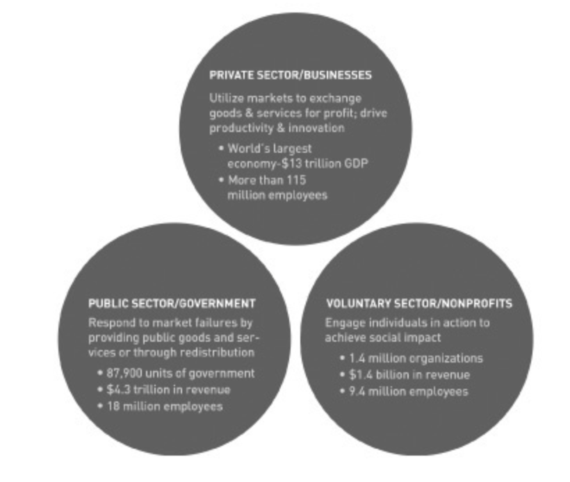
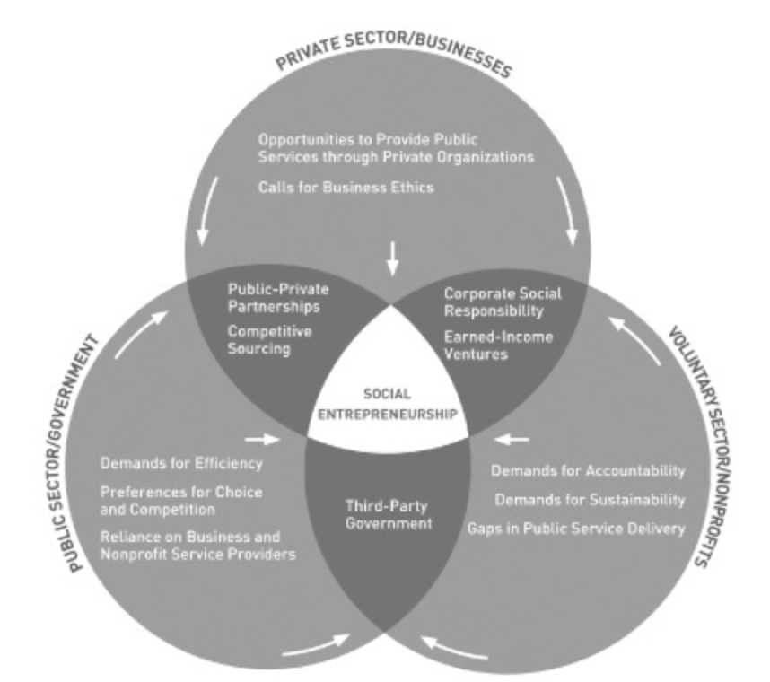
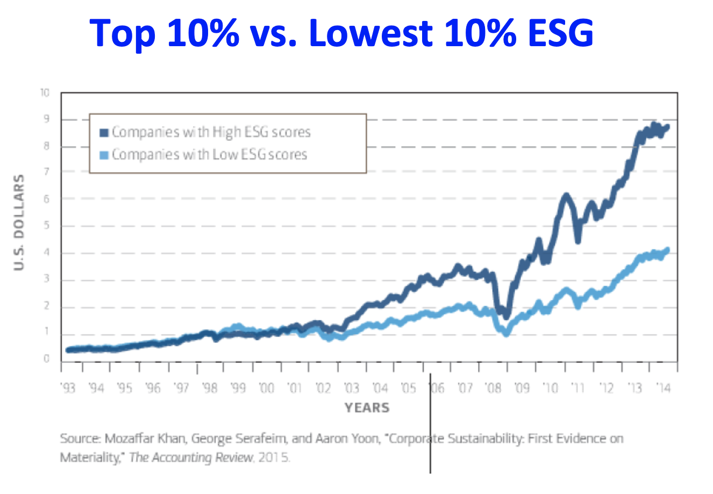

Skip to Main Content
IMPACT INVESTING
“investments made with the intention to generate positive, measurable social and environmental impact alongside a financial return”
How do you make impact investing having impact?
A movement is afoot.
It reaches across sectors and across geographies, linking small-business
loans in Detroit with community development financing in Delhi. It has
animated a generation of entrepreneurs and captured the imagination of world
leaders. It links the social consciousness of philanthropy with the market
principles of business. It’s about how the power of markets can help to scale
solutions to some of our most urgent problems.
The movement is called impact investing. It brings together entrepreneurs,
investors, foundations, public-sector leaders, nonprofits, and intermediaries
to use private capital for public good. Impact investing generates
measurable, beneficial social or environmental impacts alongside financial
returns. It’s a simple idea with profound implications. Today, impact investors finance undertakings from early
childhood education to global economic development, from preventive
health care services to village-based solar microgrids.

Private Sector
- Private investments made from instutitional or individual capital typically seeking a financial return
Public Sector
- ESG investing typically as a derivative inside ETFs or Mutual Funds. Research suggests that these have outperformed the market during trying times such as the covid-19 pandemic
Government
- Can invest and act as a guide to influence investors. Creating policy and funding/ subsidizing projects stimulate growth in impact

Social entreprenuership emerges at the nexus of the three sectors
